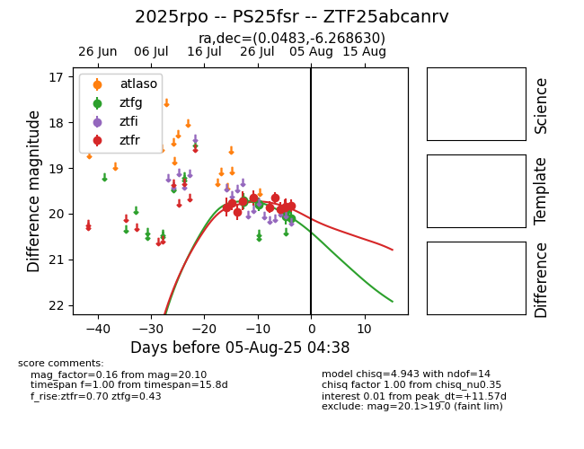

Target 2025rpo at 2025-08-05 04:38, see:
FINK: fink-portal.org/2025rpo
Lasair: lasair-ztf.lsst.ac.uk/objects/2025rpo
ALeRCE: alerce.online/object/2025rpo
TNS: wis-tns.org/object/2025rpo
YSE: ziggy.ucolick.org/yse/transient_detail/2025rpo
alt names
ZTF25abcanrv (ztf,fink)
2025rpo (tns,yse)
PS25fsr (panstarrs)
coordinates:
equatorial (ra, dec) = (0.0483,-6.26863)
galactic (l, b) = (90.3430,-65.84376)
photometry
last ztfg=20.10, ztfr=19.82
8 ztfg, 11 ztfr detections
